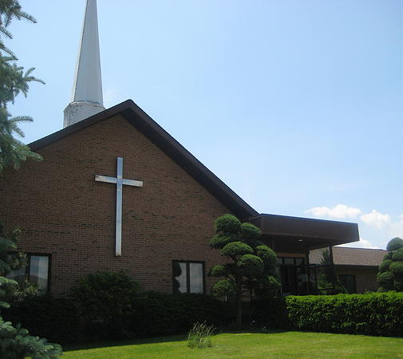
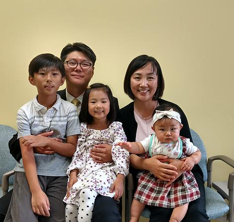

교회 소개
하이랜드교회는 1977년 시카고 북부 Lake County에 세워진 가장 오래된 한인교회입니다. PCA 한인중부노회에 속해 있습니다. 지난 38년동안 하나님께서는 5분의 목자들을 보내주셨고 하나님의 나라일을 Vernon Hills지역에서 열심으로 감당하고 있습니다.
역대 담임목회자- 1대 방다니엘 목사 (1977-1979)
- 2대 조영익 목사 (1979-2000)
- 3대 박덕은 목사 (2000-2006)
- 4대 이기성 목사 (2007-2009)
- 5대 김경문 목사 (2009-2015)
- 6대 박현수 목사 (2015- )
- 예배를 통해 하나님의 이름이 높임을 받는 교회.
- 훈련을 통해 각 지체가 강건해지는 교회.
- 교제를 통해 각 성도의 부족함이 채워지는 교회.
- 선교를 통해 모든 사람들에게 주님의 복음을 전파하는 교회


담임목사소개 박현수목사
- 생년월일: 1973년 1월 9일
- 학력: MDiv, Trinity Evangelical Divinity School BA, The University Illinois at Chicago
-
사역경력:
- 현 하이랜드 장로교회 담임목사(2015-present)
- 그레이스 장로교회 부목사(2006-2015)
- 노스필드 장로교회 부목사(2003-2006)
- 노스필드 장로교회 교육전도사(2000-2003)
- 대학목회 교육간사(1996-1999)
- 목사안수: 2003년 5월 18일, PCA 한인 중부노회
교회 연혁
- 1977. 9. 방다니엘 목사의 인도로 이종희 집사가정에서 첫 예배. 이 후, Highland Park Women Club회관에서 예배를 드리다.
- 1979. - 제2대 담임목사 조영익 목사 부임하다. Lincolnshire의 Christian Community Church건물에서 예배를 드리다.
- 1983. - 현 교회부지 6에이커를 매입하여 성전건축 위원회를 구성 (위원장: 박순호장로, 재정부장: 노재정장로, 건축실무 책임: 전병학집사)
- 1984. 2. - 성전 기공식을 갖다.
- 1984. 10. 21. - 입당예배를 드리다.
- 1987. 9. 15. - 조용중목사 필리핀 선교사로 파송하다.
- 1993. 3. 15. - 미국장로교단 (PCA)에 가입하다.
- 2000. 4. 2. - 조영익목사를 원로목사로 추대하고 제3대 담임목사 박덕은 목사 위임하다 (2006 사임).
- 2007. 1. 1. - 제4대 담임목사 이기성 목사 부임하다 (2008.12.28. 사임).
- 2009. 6. 14. – 최의설, 최의순 장로장립.
- 2009. 12. 13. - 제5대 담임목사 김경문 목사 위임하다. 배두현 장로, 이맹표 장로 원로장로로 추대하다.
- 2010. 5. 9. - Bryan Bickett전도사 캔자스교회 부목사로 부임하므로 이임하다.
- 2010. 7. 19~8.7. - 한국 Ecamp 여름 단기선교 (본 교인 17명 참석).
- 2010. 9.1. - 박지용(David Park)전도사를 교육전도사로 임명하다.
- 2010. 12.4. - EM담당 Greg Brown목사 해군 Chaplain을 위해 이임하다.
- 2010. 12.4. - 홍아브라함(Abraham Hong)목사를 보조목사로 임명하다.
- 2011.3.25~27 - 춘계부흥회 (강사: 최병수목사)를 갖다.
- 2011.7.15~20 - 뉴욕,뉴저지 여름 단기선교 (14명 참석)를 다녀오다.
- 2012. 9.7~9 – 35주년 교회 창립기념 부흥회 (강사: 한성윤목사)를 갖다.
- 2012. 12. 31. – 홍아브라함(Abraham Hong)목사 사임하다.
- 임정순전도사 교육전도사(유년주교담당)로 임명하다.
- 2012. 12. 31. – 노재정시무장로를 원로장로로 추대하다.
- 2012. 12. 31. – 강애란시무권사, 김춘희시무권사 은퇴하다.
- 2013. 6. 30. - 임정순전도사 사임하다.
- 2013. 11. 18-22 - 니카라과 선교비전트립(3명 참석)을 다녀오다.
- 2014. 5. 25. – 원계숙, 한문선 시무권사로 임직하다.
- 2014. 11. 17~21 니카라과 단기선교(5명 참석)를 다녀오다.